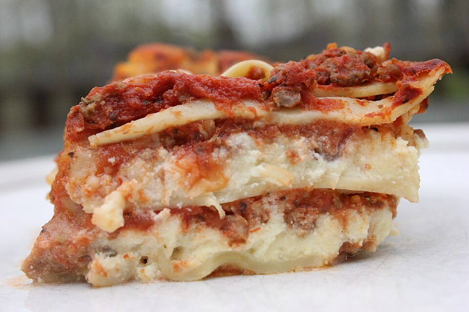

Lasagna

Description
Meat, pasta sauce, lasagna pasta sheets, béchamel sauce
Ingredients
- Lasagna pasta sheets
- Olive oil
- Ground beef
- Canned tomato sauce
- Mushrooms
- Garlic
- Oregano
- Thyme
- Basil
- Salt
- Pepper
- Ricotta Cheese
- Eggs
- Parmesan Cheese
- Mozzarella Cheese
Steps
- Preheat Oven to 175 degrees C.
- Cook ground beef in a large pot over medium heat; drain.
- Stir in tomato sauce, mushrooms, garlic salt, oregano, thyme, and basil;
season with salt and black pepper. Simmer 30 minutes.
- Meanwhile, bring a large pot of lightly salted water to a boil.
Cook lasagna noodles with olive oil in the boiling water, stirring occasionally,
until tender yet firm to the bite, 8 to 10 minutes. Drain.
- Combine ricotta cheese, eggs, and Parmesan cheese in a bowl.
- A baking dish layer meat sauce, lasagna sheets, cheese mixture, and repeat layers
- Bake in the preheated oven until cheese melts and sauce bubbles, about 90 minutes.
Cover lasagna with foil if cheese begins to get too dark.
Let sit before serving for 10 to 15 minutes.
Home